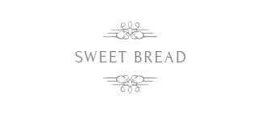
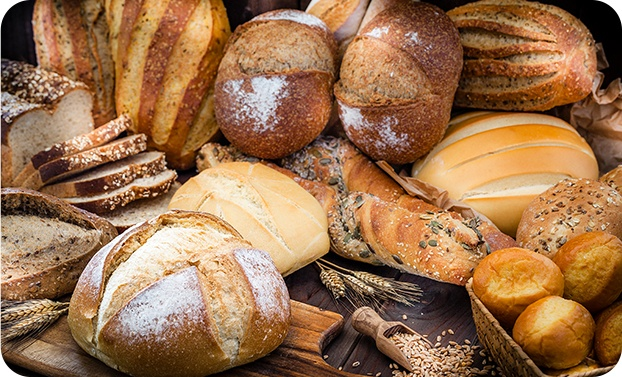

Produção Artesanal
e fabricação própria
A arte e o oficio da produção de alimentos, doces e salgados, pratos para os mais variados paladares. Essa é a essência da Panini, traduzida no sabor, no aroma e na qualidade de tudo que é fabricado aqui.
Pães de Fermentação
Natural
Uma casca crocante, um miolo macio e leve, um sabor incomparável. Os pães de fermentação natural Panini combinam com tudo o que você gosta. Todo dia e a toda hora tem pão saindo do forno!
Cestas de
Café da Manhã
Feitas com todo carinho, as Cestas de Café da Manhã Panini reúnem produtos selecionados e são perfeitas para presentear quem você gosta, no Dia das Mães, Dia dos Pais, Namorados e quando quiser surpreender.